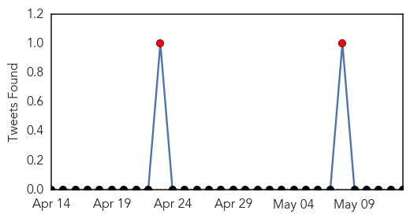
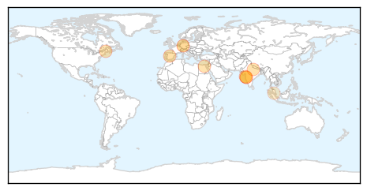
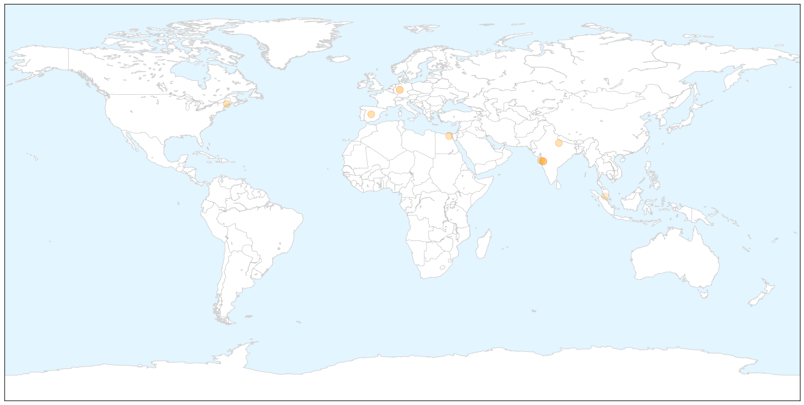
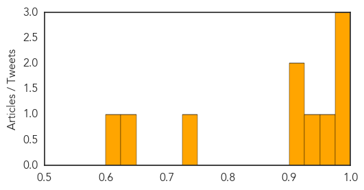
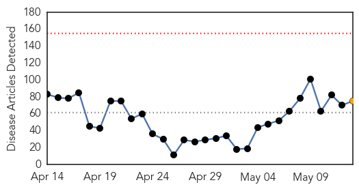
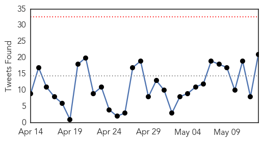
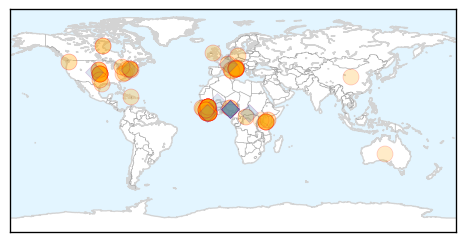
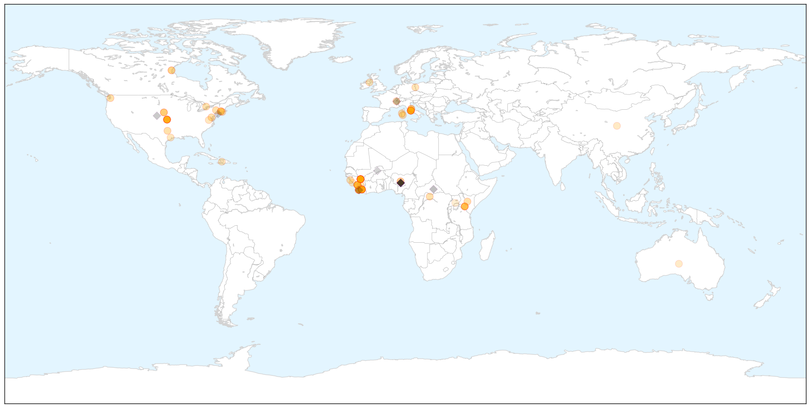
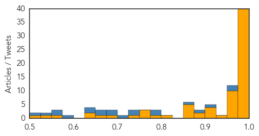

Swine Flu
30-Day Web Trend
0 alerts, 0 warnings

30-Day Twitter Trend
2 alerts, 0 warnings

Article Locations

X

Article Confidences
Top Articles:
- 0.999
- Save the swine from shame: 10 of the most stigmatizing disease names
- 0.998
- H1N1 vaccination not must but should be considered: Experts
- 0.979
- In middle of summer, H1N1 rears its head, claims one life
- 0.953
- HC notice to Centre, UP govt on prevention measures against
- 0.927
- WHO Announces New Guidelines For Naming Human Diseases
- 0.922
- No more mad cow? WHO wants disease names to avoid offending people, animals or places
- 0.909
- Maharashtra govt takes proactive measures to prevent swine flu
- 0.731
- WHO wants to Change Guidelines for naming Diseases
- 0.633
- Selangor tops expenses on health treatments
- 0.612
- WHO Issues Strict Disease Naming Guidelines to Avoid Offence
Top Tweets:
-
No tweets found for May 13, 2015
Ebola
30-Day Web Trend
0 alerts, 1 warnings

30-Day Twitter Trend
0 alerts, 0 warnings

Article Locations

X

Article Confidences
Top Articles:
- 1.000
- Liberia's Ebola Nightmare Is Over
- 1.000
- Nurse in Italy infected with Ebola, returned from Sierra Leone
- 1.000
- Patient at UConn Health Center tests negative for Ebola
- 1.000
- A public health victory in Liberia
- 1.000
- Ebola sickens Italian nurse; cases decline in outbreak region
- 1.000
- Nurse in Italy infected with Ebola, returned from Sierra Leone
- 1.000
- Nurse becomes Italy's second Ebola case
- 1.000
- Ebola Not Mutating Beyond 'Normal' Rate, Scientists Say
- 0.999
- Patient with Ebola-like symptoms tests positive for malaria
- 0.999
- The Ebola buffoons get humiliated: The politicians and pundits who were the wrongest about Ebola
- 0.999
- Liberia Given The All Clear From Ebola
- 0.999
- UConn Patient Monitored for Ebola Tests Positive for Malaria
- 0.999
- Italian nurse tests positive for Ebola, 2nd case in country
- 0.999
- Italian nurse positive for Ebola not in critical conditions - Xinhua
- 0.999
- Ebola, health systems and justice in West Africa Vatican Radio
- 0.998
- THINK AGAIN: Why did Liberia beat Ebola before Guinea or Sierra Leone?
- 0.998
- Kenya lifts travel suspension of Ebola-free Liberia
- 0.998
- Kenya lifts travel suspension on Ebola-free Liberia - Xinhua
- 0.997
- Experts weigh challenges, options for Ebola vaccine clearance
- 0.997
- Ebola: Italian nurse tests positive for disease
- 0.996
- Latest Ebola data rule out rapid mutation
- 0.996
- Ebola failures prompt WHO rethink
- 0.995
- Ebola virus disease – Italy
- 0.995
- Liberia holds ‘Goodbye Ebola’ celebrations
- 0.995
- Observer
- 0.995
- Italian Nurse Who Worked in Sierra Leone Tests Positive for Ebola
- 0.995
- Is It Ethical To Keep Trying To Develop An Ebola Vaccine?
- 0.994
- Gbowee Peace Foundation Hails WHO
- 0.992
- As Ebola disappears, no useful data seen from vaccine trials
- 0.991
- US Congratulates Liberia Gov’t
- 0.991
- Patient admitted to Connecticut hospital with possible Ebola infection
- 0.989
- Italy Records Ebola Case
- 0.987
- Learning from Ebola crisis
- 0.987
- pandemics are strongly driven by inequality
- 0.986
- Disputes emerge over African Ebola drug trials
- 0.984
- Mahama congratulates Liberia over end to Ebola
- 0.982
- The Liberian Observer
- 0.982
- AfDB Rep. Calls for Resilient Healthcare System
- 0.981
- Nurse hospitalised in Rome after testing positive for Ebola
- 0.979
- Fighting Ebola: One Man’s Story of Life and Death in Sierra Leone
- 0.974
- How Nigeria beat the ebola virus in three months
- 0.974
- Ebola Testing Being Done On Connecticut Man Who Returned From Liberia « CBS New York
- 0.970
- Reuters Health News Summary
- 0.969
- WHO works on plan to tackle disease outbreaks after Ebola fiasco
- 0.969
- Italian Nurse Hospitalised In Rome After Testing Positive For Ebola
- 0.968
- 42 days later: Liberia declared Ebola-free
- 0.961
- Ebola vaccine trial in west Africa faces criticism
- 0.961
- The pain of the new normal: Guinea after Ebola
- 0.954
- Kenya Airways : Relief for Kenya Airways as Liberia Ebola ban lifted
- 0.952
- A nightmare comes to close in Liberia as MDs declared ‘Ebola-free’ : Frost Illustrated
Showing top 50 articles...
Top Tweets:
- 0.952
- Patient Admitted to UConn Health Center With Possible Ebola Virus - NBC Connecticut http://t.co/wXLdDVWszQ ebola EVD
- 0.952
- Patient Admitted to UConn Health Center With Possible Ebola Virus - NBC Connecticut http://t.co/bTAUcqZ4na ebola EVD
- 0.921
- Experts Criticize World Health Organization's 'Slow' Ebola Outbreak Response - Wall Street Journal http://t.co/t3QG44aIiu ebola EVD
- 0.892
- Liberia Ebola Orphans: Over 4500 Children Lost Parents Due To Deadly Virus - International Business Times http://t.co/OwKeDaTCJ3 ebola EVD
- 0.861
- How Nigeria beat the ebola virus in three months - The Conversation AU http://t.co/JnuSzbMNXY ebola EVD
- 0.791
- The patient is a healthcare worker who has returned from volunteering at an Ebola treatment centre in Sierra Leone. - @WHO EbolaInItaly
- 0.788
- Patient At John Dempsey Hospital Undergoing Ebola Testing - Hartford Courant http://t.co/xwwRZ3q6bt ebola EVD
- 0.740
- RT: "@AfricaStopEbola: Tiken Jah Fakoli dans la Riposte à Ebola: L'icône du reggae Tiken Jah à Conakry pour «Africa... http:…
- 0.727
- RT: Liberia continues to celebrate the end of the Ebola outbreak but also urge ongoing caution. Liberia StaysVigilant http://t…
- 0.704
- Patient Admitted to UConn Health Center With Possible Ebola Virus - NBC Connecticut http://t.co/nNprPimhDS
- 0.683
- RT: 9 confirmed cases reported in the week to May 10 keep up the fight to ZeroCases! via Ebola Situation Report http:/…
- 0.681
- ALERT: @WHO confirms a case of Ebola Virus Disease (EVD) in Italy. http://t.co/lcmOvQjwkx
- 0.669
- The patient flew from Freetown to Rome via Casablanca on 7May. On arrival he displayed no symptoms of infectious Ebola. -@WHO EbolaInItaly
- 0.668
- Africa must do more to fight Ebola - ethics & medical lawvprofessor - News24 http://t.co/5IBl8uYiT8 ebola EVD
- 0.633
- Did you know that Ebola Fever got its name from River Ebola in DRC? Here's what's thinks of such disease names http://t.co/c8hU89qvz8
- 0.627
- RT: Italian nurse back from Sierra Leone tests positive for Ebola http://t.co/ouObrktATz
- 0.583
- Liberia's Military Tries to Remedy Tension Over Ebola Quarantine - New York Times http://t.co/M47E5xvJzz ebola EVD
- 0.568
- The patient was then transported on 11 May to the infectious diseases ward and a diagnosis of Ebola was made. - @WHO EbolaInItaly
- 0.555
- Africa must do more to fight Ebola - ethics & medical law professor - News24 http://t.co/FpKBrSTLyu ebola EVD
- 0.544
- Zero new Ebola cases in Sierra Leone since May 5 http://t.co/uajAqhq3Z0
- 0.511
- RT: Zero new Ebola cases in Sierra Leone since May 5 http://t.co/uajAqhq3Z0